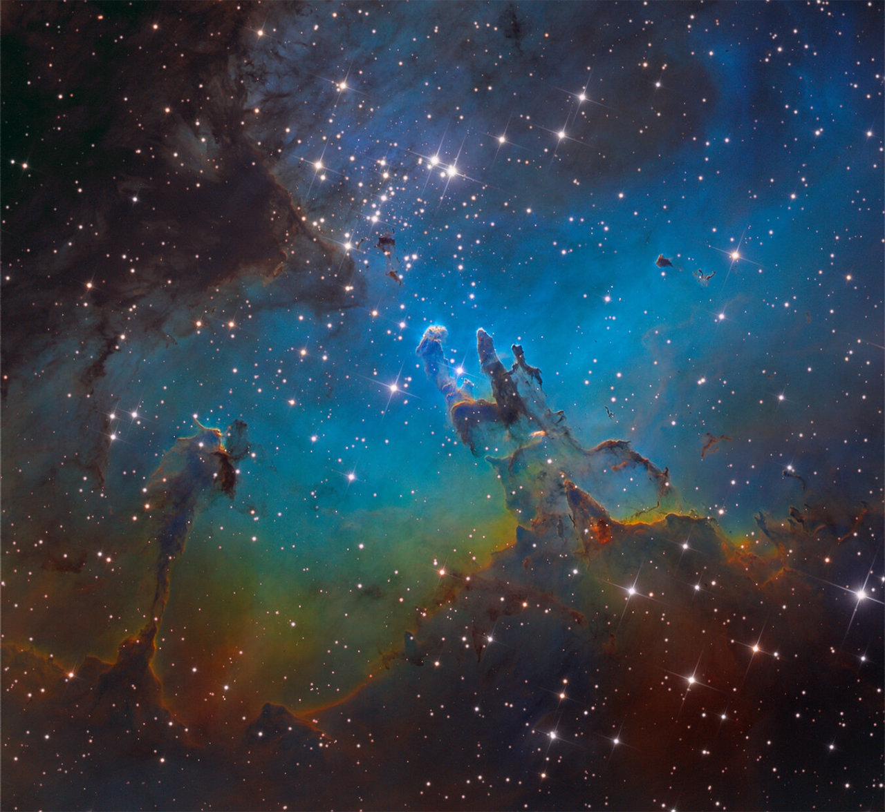

My Courses
This is a description of my classes I am taking or have taken.
CIS-1420 HTML5 Programming
- This is a course where I am learning how to use HTML coding. It is a fun class and I have learned how to make a website. It is easier than I thought it would be. The HTML tags aren't too bad to learn/remember. Overall I have learned a lot and assume this will be very useful information when I become a software engineer.
CIS-2111 System Analysis and Design
- This course I learned a lot about the Data models and Projects in the business end of computer science. The class goes through all kinds of things ranging from user interface desing to porgram design and Data storage design and how to implement these things
Astronomy
- This was one of my favorite classes I have taken. Professor JoDee was amazing. I highly recommend takinf her class even if you aren't going into astronomy. She taught well and kept students engaged and I had extra fun because I love space. I leanred about spectra, how galaxies form, how stars form and die, phases of the moon, different types of galaxy formations, different types of stars, black holes, expansion of the universe, ways the universe may end different types of stars(like neutron stars), and all the particles that are in the universe. Some of this I learned on my own time becuase this stuff has always interested me. It was a fun class and I ended up getting an A in it.

Molecular and Cellular Biology
- This class was one of my favoirtes as well. I love science, but never had any urge to go into biology ever. I had to take this class becuase it was required, so my girlfriend and I took it together. That added a competitve side to the class, which I enjoyed. We learned some bsic chemistry to start off the class then we learn the Krebs Cycle, and Photosynthesis, and the life of a cell, ad how cancer works, and how DNA is made and works. Over all it was made a great class because of the professor. Professor Koblin would make connections that most professors wouldn't try to or even think of. It would make learning easier and fun. He would make sure everyone was engaged and wanted criticsim on what he could do better. The labs were also fun. He would try ot get to know the stdents in our class because we were a small summer class. He really cared about his job and took it seriously while having fun too. I learned a lot from this class.
Special Assignments
- In my current classes I don't have a lot going on with assingments. This website is currently my only project and a fun one at that. I am learning a lot when it comes to coding in HTML. I would say it is more chill compared to other programming languages like Java or Python. My astronomy class we had to go out every night for a week to draw the moon and see how much it would change over the course of a week. Hard to do in Michigan with the weather, but the students managed. In a intro to Java programming class, I had ot create a lot of different codes that help you learn the fundamentals of coding. I made a code that popped open a dialog box with options for an icecream shop to chose your type of ice cream and what toppings you want on it. I took a C++ class where one assingment involved making text based game in the IDE that had enemies like dragons and goblins and wizards and they all had different attack levels and damage output.